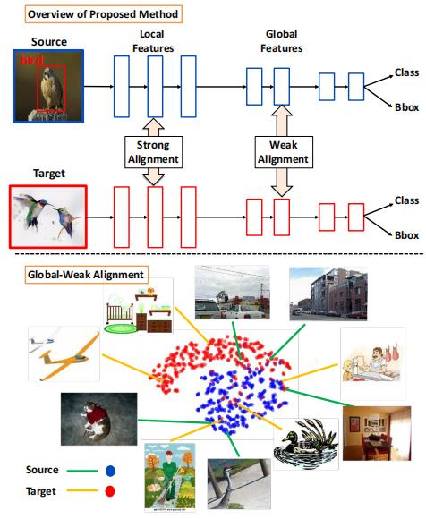
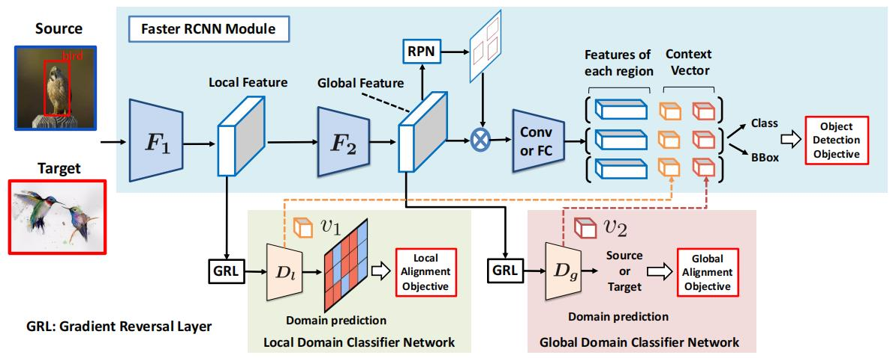
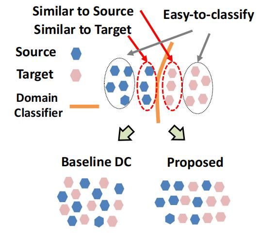
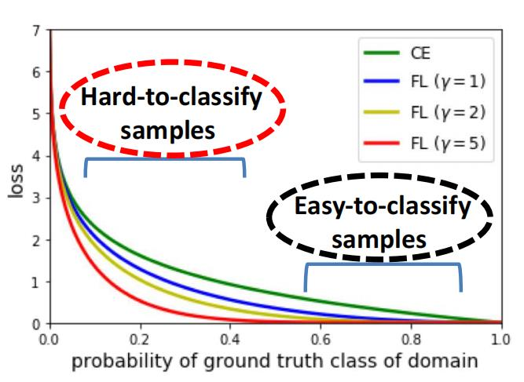
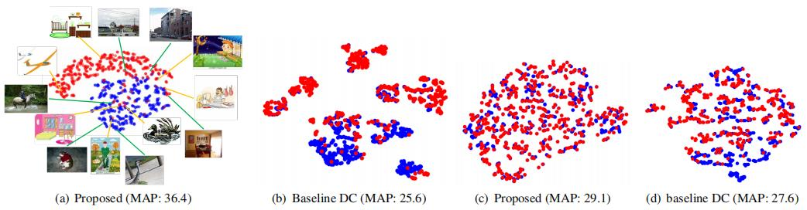
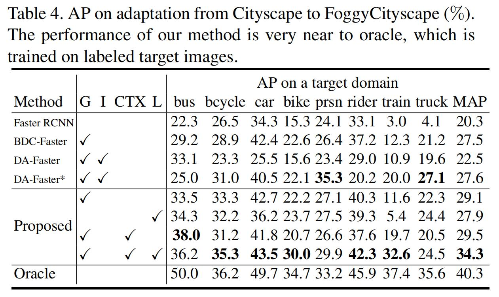

域适应：Strong-Weak¶
综述¶
会议时间：IEEE Conference on Computer Vision and Pattern Recognition 2019 (CVPR, 2019)
源码地址：https://github.com/VisionLearningGroup/DA_Detection
针对领域：域适应目标检测
主要思想¶
利用对抗性学习来调整源域数据分布和目标域数据分布是常用的域适应算法，通过将泛化误差限制在域间的差异内，可以很好地让模型适应输入图像领域的变化。传统的观点认为必须尽可能地减少域间差异，但执行无差别的对齐有可能会损害模型的检测性能。在目标检测中，对齐全局特征意味着不仅对象类别需要相似，而且背景信息、场景分布也必须跨域相似。这种方法对于仅影响对象外观的小区域偏移也许适用，如天气相关的领域偏移，但面对比较大的领域偏移，如场景分布的不同、物体数量的不同等，如果强制对齐这些特征数据，会损害模型的检测性能。另一方面，作者还发现由于图像的局部特征(从浅层网络中提取的特征)中仅包含较小感受野的图像信息(如局部的颜色、纹理特征)，因此对局部特征执行强对齐有利于缩小域间的差异，并且不会损害模型的性能。
本文中，作者提出了一种域适应目标检测的无监督适应方法，将弱全局对齐和强局部对齐结合的强弱域对齐模块(Strong-Weak Domain Alignment)。作者在全局特征上应用弱对齐，执行部分对齐以减少领域差异，同时不损害模型性能。如下图中所示。作者的主要贡献就是设计了弱全局对齐模块，将对抗损失集中于全局相似的图像上，同时远离全局不相似的图像。此外，作者还设计了一个域分类器来执行强局部对齐，使得两个域之间的局部特征实现严格的强对齐。

方法¶
网络结构¶
算法的网络结构如下图所示，首先在浅层卷积层提取局部特征以及RPN之前提取全局特征，并且在低水平特征空间上执行强局部对齐，在高水平特征空间上执行弱全局对齐，最后进一步将上下文向量与特征区域拼接，来提高模型的检测性能。

弱全局特征对齐¶
作者利用领域分类器将目标域特征与源域特征实现对齐，以实现全局水平的特征对齐。如下图所示，容易分类的目标域样本特征将远离特征空间中的源域样本特征，不容易分类的目标域样本特征将靠近源域样本特征。因此，在域分类器训练过程中，应该忽略容易分类的样本，即忽略那些容易判断领域标签的样本，将关注重点放在域分类器难以分类的样本上，即提高难分类样本的全局对抗损失的权重。

假设源域图片为x^{s}，对应的标签为y_i^s，目标域图片为x^t，目标域图片没有额外的标签。全局特征向量由F提取，域分类器D_g用于预测全局特征的领域标签(即预测该特征属于哪个领域)。作者通过优化F来使特征对于目标检测任务是有区分度的，而对于域分类器任务是无信息的(uninformative)，即通过优化F来阻碍域分类器的执行。对于源域数据，领域标签d为1，对于目标域数据，领域标签d为0。网络R输入从F提取的特征，输出边界框信息以及类别信息，R包括区域提议网络(RPN)以及Faster RCNN的其他模块，目标检测任务的损失如下：
现有的方法中，领域分类器的损失使用交叉熵损失，如上图所示，在交叉熵损失中，对于具有较高类别概率的易分类样本具有同样的惩罚规则，这表明D_g与F在训练过程中平等对待所有的样本，因此F会尝试匹配整个数据的特征分布，但这并不是我们所希望的，如上文的分析，我们希望在全局对齐中，让D_g重点关注那些难以分类的样本，即重点关注图像具有小领域偏移的数据(小领域偏移的图片和原图具有较为相似的分布，因此难以判别领域的标签，而强制对齐这些分布有利于模型的领域适应能力)，并且忽略容易分类的样本，即忽略图像具有较大领域偏移的数据(大偏移会带来视觉上较大的差异，容易判断领域的标签，强制对齐两个差异比较大的数据分布会损害模型的性能)。
交叉熵损失的问题在于他给定了易分类样本不可忽略的值，假设p为正确判断的概率，由公式-\log(p)可以发现，当样本领域标签比较容易预测时，结果往往是趋于0的，但除非能做到完美预测类别（即p=1），-\log(p)始终会产生一个不可忽略的值，交叉熵损失始终都会对域分类器的预测做惩罚，因此为了抑制这种影响，提高损失趋于零的速度，我们可以在原有式子基础上做微调，加一个权重系数。假设p\in[0,1]表示模型估计标签d=1的概率，作者在交叉熵损失中增加了一个调制因子(modulating factor)f(p_t)：

弱全局域分类器的损失可以表示为\mathcal L_{global}：
这种损失也会对齐网络低层参数，即对齐低层特征数据，但效果不够强，因此作者又设计了强局部特征对齐模块。
强局部特征对齐¶
作者还设计了局部特征域分类器D_l来让网络关注局部特征的对齐，局部特征对齐网络由卷积核尺寸为1的全卷积网络构成，如网络结构图所示，特征提取器F被分解为F_2\circ F_1，将F_1输出的特征图传入D_l来预测领域标签。假设F_1输出的特征图宽和高依次为W和H，则D_l输出的预测图具有相同的宽高尺寸。强局部特征对齐损失函数如下：
基于上下文向量的正则化器¶
为了进一步提高模型的性能，作者提出了一个网络正则化器。之前的研究中提到，利用分割损失来调整域分类器有利于提高域适应语义分割任务中对抗训练的稳定性(论文链接)，并且设计了一个用于输出领域标签和语义分割图的领域分类器。受此启发，作者设计了一种稳定域分类器训练过程的方法，首先分别提取两个域分类器中间层产生的特征向量v_1和v_2，这些特征包含整个输入图像的信息，因此作者将他们称为”上下文”(context)。之后再将这些向量合并到所有感兴趣区域的特征(region-wise features)后面(具体可见上面的网络结构图)，最后通过最小化源域样本在目标检测器上的损失和域分类器上的损失来训练域分类器参数。测试阶段，”上下文”向量同样被传到ROI中，参与目标类别和目标位置的决策。
损失函数¶
网络对抗损失\mathcal L_{adv}可以表示为：
实验¶
可视化分析¶
作者提出的方法主要用于提高模型在领域偏移较大的数据上的检测性能，如下图(a)(b)所示，提出的模型精度要远高于带有基线域分类器的Faster R-CNN模块。由于对全局特征也执行强数据对齐，基线模型通常会产生紧密匹配的特征分布，这种分布并不总是有助于域适应的目标检测，作者提出的算法由于对全局特征执行弱对齐，因此具有较为分散的特征分布，而这正有助于域适应的目标检测。对于领域偏移较小的数据，如下图©(d)所示，虽然结果都差不多，但是精度要比基线模型高一些。

上图中，蓝色表示源域数据，红色表示目标域数据。
mAP对比¶
Cityscape \rightarrow FoggyCityscape

总结¶
本文提出了一种基于强局部对齐和弱全局对齐的无监督域适应目标检测算法，主要的贡献就是设计了一种弱对齐模块，将对抗损失集中在全局相似的图像上，远离全局不相似的图像，并且针对特征图上局部的感受野区域设计了强局部对齐模块。通过实验分析得到，该算法的性能要优于现有的域适应检测算法。
注：以上仅是笔者的个人见解，若有错误，欢迎大家批评指正
最后一次修改日期：2022年1月29日